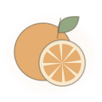

Coffee journal
Learn coffee from farm to final cup.
A little curiosity. A better cup. Choose where to begin.

Explore & learn
Choose your next chapter.
Ready to brew
Open a practical tool.
A MOMENT WITH YOUR CUP
Smell. Sip. Stay curious.
No scores. No right answers. Just notice what you enjoy.
01 / SMELLWhat comes to mind?
Take a gentle sniff before your first sip. Flowers, fruit, toasted nuts? A broad impression is enough.

02 / SIPFollow the flavor.
Take a small sip when comfortably cool. Notice taste and aroma together. A sweet-smelling note needn't taste sugary.
 03 / FINISHWhat stays with you?
03 / FINISHWhat stays with you?
Pause after swallowing. Notice the lingering flavor and how your mouth feels: light, rounded, or drying.
A little more about tasting
Flavor notes are comparisons, not added ingredients. These informal prompts are our own introduction, informed by the World Coffee Research Sensory Lexicon. They aren't a calibrated sensory test.
For roasters, producers & cafe teams
Follow the practical checklists in roasting and quality control, farm and processing, or equipment evaluation.
When comparing results, record dose, yield, time, temperature, grind, agitation, and water. For green coffee, track harvest selection, fermentation, drying, moisture, water activity, and lot separation.